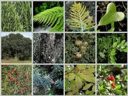
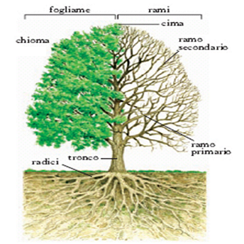
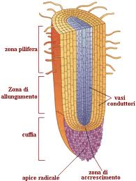
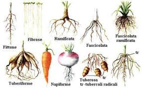
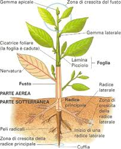
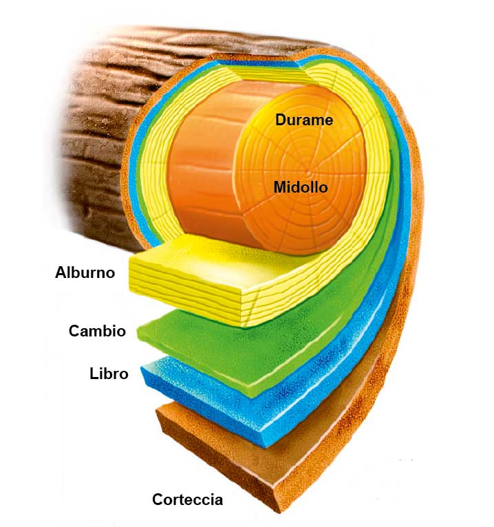
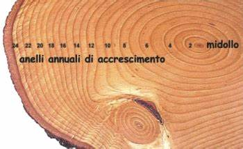

da WIKI ISG, l'enciclopedia libera dell'Istituto San Giuseppe

Il regno delle piante
comprende tutti gli organismi pluricellulari, eucarioti ed autotrofi. Questi sono paragonabili a macchine in grado di utilizzare l’energia solare per ottenere energia chimica, quella cioè contenuta nel glucosio che essi stessi producono attraverso la fotosintesi clorofilliana. Sono piante gli alberi, gli arbusti o cespugli, le erbe, i rampicanti, le succulente, le felci, i muschi, alghe verdi e molti altri ancora. Vi sono più di 400.000 specie di piante catalogate.
La maggior parte delle piante sono incluse nel gruppo delle Angiosperme (divisione Magnoliophyta), con circa 250.000 specie, che si distinguono dagli altri gruppi per la produzione di fiori, seguita, dopo l'impollinazione, dalla formazione di semi racchiusi e protetti all'interno di un frutto.
Le branche della biologia più importanti che si occupano dello studio delle piante sono la botanica per la sistematica e l'anatomia, la fisiologia vegetale per il loro funzionamento e l'ecologia vegetale, che studia la distribuzione delle piante e l'effetto dei fattori ambientali che influenzano tale distribuzione, nonché le interazioni tra le piante e gli altri organismi.
Le piante si sono adattate, nel tempo, a diverse condizioni climatiche, arrivando a colonizzarsi su tutta la faccia della terra, infatti la loro presenza è di notevole importanza per la maggior parte degli esseri viventi. Le piante, infatti, producendo ossigeno, rappresentano l’alimento per gli animali e forniscono all’uomo fibre e materiali vari per la costruzione, colorazione e preparazione di medicinali
Le piante sono costituite, in generale, da tre strutture (definite anche organi) che assolvono le funzioni vegetative: radice, fusto e foglia.
Le piante non vascolari
La pianta è composta da ...
Le piante vascolari
La pianta è composta da ...

LE RADICI
La radice è l'organo della pianta specializzato che ha diverse funzioni:
Assorbimento di acqua e sali minerali dal terreno, fondamentali per la vita delle piante.
Ancoraggio Le piante riescono a mantenere la loro posizione verticale grazie al sistema di ancoraggio fornito dalle radici, questo consente di esporre la parte aerea alla luce solare, agli agenti impollinatori ed a quelli che attuano la dispersione dei semi.
Produzione di ormoni. Le radici producono diversi ormoni che influenzano la crescita e lo sviluppo del fusto. Tra questi ormoni vi sono le CITOCHININE e le GIBBERELLINE. Questa azione integra lo sviluppo del fusto e delle foglie di una pianta con quello delle radici.
Armonizzando lo sviluppo della chioma e delle radici di una pianta si evita che le foglie possano perdere troppa acqua rispetto a quella che può essere assorbita tramite il sistema radicale.

La struttura della radice
Dall’alto verso il basso si possono riconoscere:
Zona di Assorbimento dotata di peli radicali, prolungamenti delle cellule dell’epidermide simili a dita di un guanto. I peli radicali sono sottilissimi tubicini che penetrano nel terreno e formano una superficie di assorbimento enorme. L’acqua che scorre nel terreno passa alle cellule per osmosi finché raggiunge i vasi di trasporto che salgono verso il fusto.
Zona di allungamento formata da cellule che crescono in lunghezza: insieme con l’apice radicale è responsabile della crescita della radice.
Apice radicale. E’ la parte della radice che penetra in profondità. E’ formato da cellule che si riproducono rapidamente. E’ avvolto da una cuffa radicale fatta di cellule robuste che lo proteggono dallo sfregamento contro i granelli del terreno.
Tipi di radice:
Le radici tuberi formi, anche dette radici tuberizzate o radici succulente o rizotuberi o bulbo tuberi, sono particolari radici laterali modificate e dalla forma ingrossata che fungono da organo di riserva in quanto raccolgono al loro interno acqua e altre sostanze utili al sostentamento della pianta. Svolgono dunque funzioni analoghe a quelle dei bulbi e dei tuberi (con i quali sono anche morfologicamente simili), ma a differenza di questi se separate dal fusto non possono dare vita ad una nuova pianta in quanto privi della possibilità di emettere polloni -capacità pollonifera-.(es. patata)
Il fittone è la radice principale dell'apparato radicale delle piante dicotiledoni e gimnosperme.
Si presenta come un grosso corpo cilindrico a carattere legnoso che scende verticalmente dal fusto della pianta, assicurando ancoraggio e stabilità alla pianta, oltre al normale scopo di trasporto delle sostanze nutritive al corpo emerso del vegetale. Un esempio di fittone è la parte arancione delle carote impiantate saldamente nel terreno grazie ad esso. Altra pianta con radice fittonante è il girasole, che grazie a questa struttura intercetta bene l'acqua del terreno, rendendosi così quasi "autonomo" per quanto concerne l'approvvigionamento idrico.
Le radici a fittone scavano nel terreno cunicoli il cui rapporto parte epigea/radice arriva a 1:10; per ogni metro di pianta quindi, si sviluppano circa dieci metri di radici.

La radice fascicolata. La radice principale muore poco dopo a germinazione e le radici secondarie si sviluppano fino a raggiungere tutte la stessa lunghezza. (es. Aglio, Cipolla)
Radici avventizie sono quelle radici che si formano in particolari condizioni da parti della pianta diverse dalla radice (es. fusto, foglie). Formano il sistema radicale di molte Gramineae e, se opportunamente modificate con terminazioni adesive, servono come ancoraggio a substrati spesso verticali (es. Edera, Ficus).
Radici aeree, o “radici volanti”, si intende il comportamento degli organi radicali di una pianta di svilupparsi al di fuori dal terreno crescendo in altezza e non in profondità. Radici di questo genere sono comuni ad alcune specie di piante tropicali o comunque di piante che vivono in habitat particolarmente umidi. Le radici aeree assorbono acqua ed ossigeno dall'ambiente circostante senza la necessità di crescere in profondità per raggiungere fonti di acqua più abbondanti. (es. orchidee)
IL FUSTO

Detto anche tronco, è la struttura portante delle piante. È un organo caratterizzato dall'alternanza di sistemi di nodi, i punti a livello dei quali si inseriscono le foglie, e internodi, i segmenti di fusto compresi tra due nodi consecutivi.
Il fusto con le sue diramazioni, i rami, è l’organo che ha funzione di :
collega le radici con le foglie
sostenere le foglie e tutte le altre strutture della pianta
consentire il trasportare di acqua e sali minerali dalle radice alle foglie, nonché la linfa da queste a tutta la pianta.
Struttura del fusto
Lungo il fusto e i rami ci sono delle zone in cui le cellule si riproducono continuamente che si chiamano gemme e che costituiscono le zone di accrescimento per il fusto , i rami e le foglie.
Le gemme possono essere apicali se si trovano all’estremità del fusto o ascellari se si trovano sul rami alla base delle foglie.
Il fusto è percorso per tutta la sua lunghezza da microscopici vasi che si distinguono in:
vasi legnosi che trasportano l’acqua e i Sali minerali (linfa grezza) dalla radice alle foglie
vasi cribrosi che trasportano le sostanze organiche (linfa elaborata) dalle foglie a tutta a pianta.
Nel fusto esistono diversi tipi di tessuti: epidermide, parenchimi, tessuti di sostegno, tessuti conduttori.
In base alla loro consistenza i fusti vengono distinti in erbacei e legnosi. I fusti erbacei e quelli legnosi si differenziano tra di loro sia sotto l'aspetto morfologico, vedi portamento della pianta, sia sotto l'aspetto anatomico.

Il fusto legnoso
Il fusto legnoso delle piante presenta un accrescimento secondario, ossia in diametro. Analizzando la sezione si possono riscontrare, a partire dalla zona centrale, una serie di strati:
Il midollo. È un parenchima di riserva, che in alcuni casi può scomparire lasciando cavità o legno.
Il cambio. È un meristema secondario, che produce legno verso l'interno e libro all'esterno.
Il libro o floema, che conduce la linfa. A differenza del legno non aumenta in spessore durante l'accrescimento secondario, essendo lacerato dall'accrescimento del legno all'interno, e quindi ricostruito dal cambio.
Il sughero. È un tessuto di rivestimento formato da cellule morte, contenenti bolle d'aria e sostanze che ne impediscono la decomposizione. Sostituisce l'iniziale epidermide che è lacerata dalla crescita dell'interno del fusto. Il sughero è utilizzato anche nel campo industriale perché impermeabile all'acqua e quindi idrorepellente.
FUSTI ERBACEI
Nei fusti erbacei si riscontra solo la struttura primaria, che permane per l'intera durata del ciclo vitale della pianta, mentre nei fusti legnosi la struttura primaria evolve in struttura secondaria. I fusti erbacei sono teneri e verdi e, come le foglie, svolgono la fotosintesi clorofilliana.

COME CALCOLARE L’ETÀ DI UN ALBERO
Lo studio della sezione del fusto spiega come l'albero è cresciuto nel tempo. Si chiama dendrocronologia ed è un sistema di datazione utilizzato per calcolare l’età di un albero sfruttando i cosiddetti anelli di accrescimento o anelli annuali. Per ogni stagione vegetativa, si forma un anello di accrescimento ed è possibile determinare l'età di un albero contando gli anelli di accrescimento del suo fusto.
Come si formano gli anelli del legno
Gli alberi crescono sia in altezza che in larghezza. Per la crescita in senso orizzontale è stato osservato un “allargamento ad anelli”.
Ogni anno, con l’arrivo della bella stagione, l’attività vegetativa di tutte le piante s’incrementa producendo così nuove cellule nello strato immediatamente sottostante a quello della corteccia. La crescita è intensa nel periodo primaverile e rallenta in estate fino a cessare completamente nell’autunno inoltrato. La crescita si arresta e così si forma il nuovo anello.
Nel tempo, anno dopo anno, si accumulano gli anelli del legno, uno per ogni anno di vita dell’albero.
Per calcolare l’età di un albero bisogna contare il numero di anelli nel tronco principale. L’osservazione andrebbe fatta quando il tronco è stato appena tagliato. Si può notare che il colore di questi anelli non è sempre uniforme così come lo spessore di ogni anello. Il colore chiaro è dovuto alle cellule primaverili che sono più grandi e porose mentre i colori più scuri che si intervallano tra un anello e l’altro, sono dovute a cellule più strette e piccole, formate nel periodo estate-autunno.
Con annate piovose e molto luminose, con condizioni di fertilità del suolo ottimali, si avranno anelli più spessi, mentre quando l’andamento climatico è sfavorevole alla crescita dell’albero, l’anello avrà una formazione meno generosa.
Come stimare l’età di un albero ancora in vita in base alla circonferenza del tronco.
Il secondo sistema è sicuramente più impreciso ma consente di calcolare l’età di un albero ancora in vita. E’ un metodo impreciso perché ogni albero può accrescersi in modo differente: di certo un albero che si trova a prosperare in una zona in cui sono presenti le sue condizioni di crescita ideali, a parità di tempo trascorso, si ritroverà con un tronco molto più grande di un albero identico ma fatto crescere in una zona più critica.
Il calcolo matematico per stimare l’età di un albero è molto semplice: misurate la circonferenza con un metro da sarto. Segnatevi la misurazione rilevata e dividete questo valore per 2,5. Il risultato che otterrete dovrebbe rappresentare gli anni di vita della pianta.
La foglia è l'organo indispensabile per la pianta perché fornisce la fotosintesi, la respirazione, la traspirazione e la guttazione (fuoriuscita d'acqua che permette la traspirazione quando le condizioni atmosferiche sono sfavorevoli). Le foglie possono immagazzinare alimenti e acqua ed in alcune piante le loro forme sono modificate per altri scopi.
La foglia
La fotosintesi clorofilliana, è un processo chimico per mezzo del quale le piante verdi e altri organismi producono sostanze organiche – principalmente carboidrati – a partire dal primo reagente, l'anidride carbonica atmosferica e l'acqua metabolica, in presenza di luce solare, rientrando tra i processi di anabolismo dei carboidrati, del tutto opposta ai processi inversi di catabolismo.
La fotosintesi clorofilliana
La respirazione cellulare ,è un lento processo di combustione nel quale i nutrienti, ridotti dalla digestione a componenti elementari come zuccheri semplici, amminoacidi e acidi grassi, vengono demoliti in molecole ancora più semplici ottenendo energia disponibile alla cellula sotto forma di ATP. È un processo esotermico di ossidoriduzione formato da una catena di reazioni in cui i prodotti di un passaggio sono utilizzati come reagenti per il passo successivo.
La respirazione cellulare